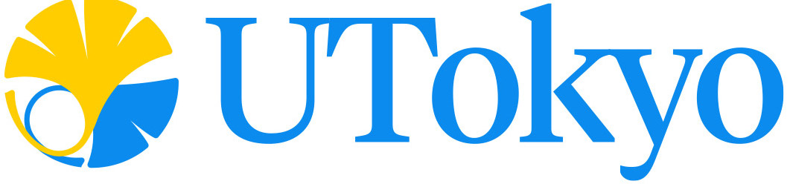
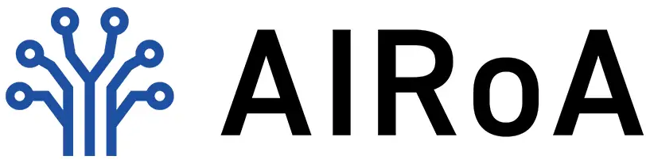
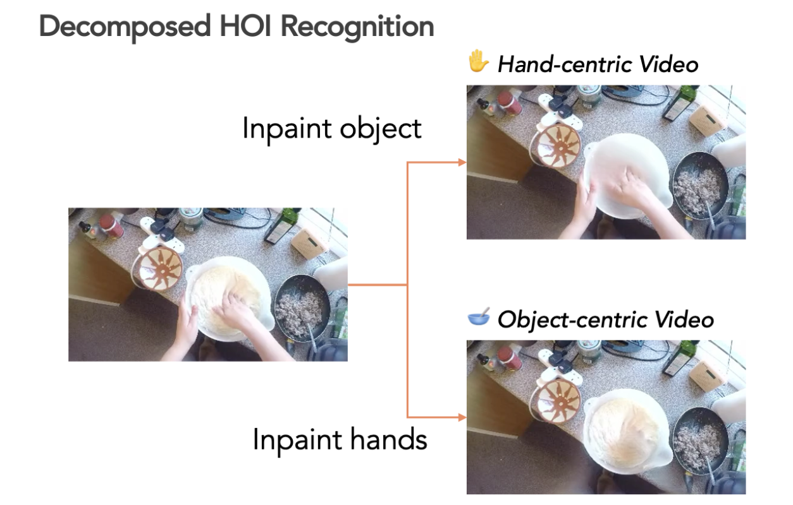
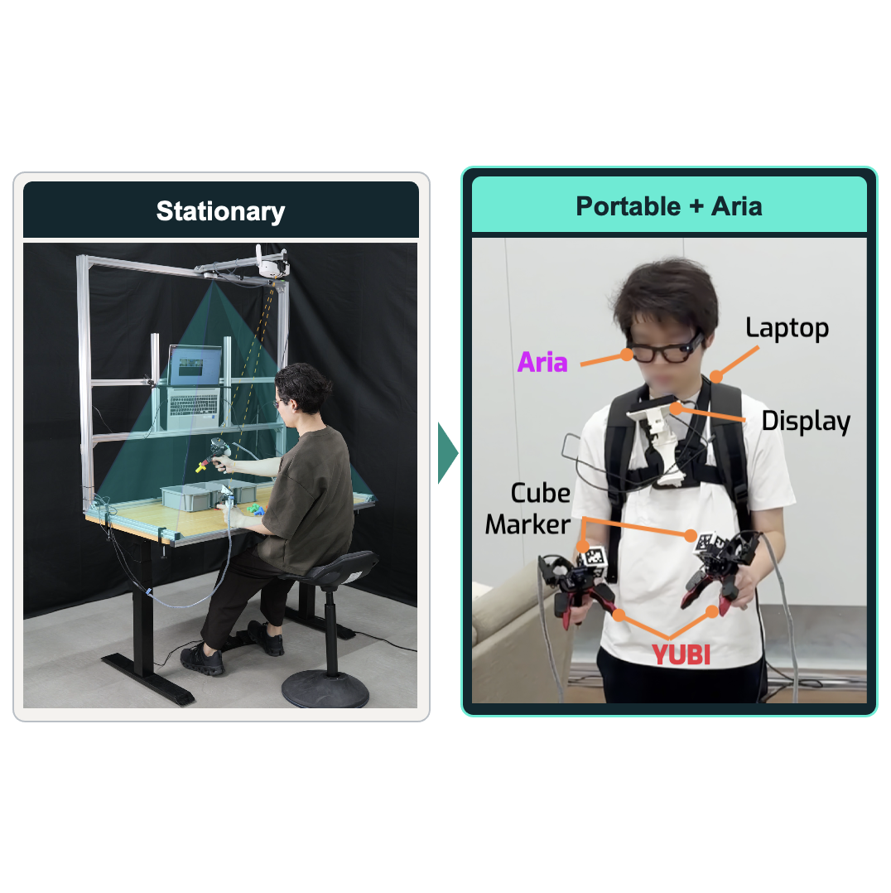
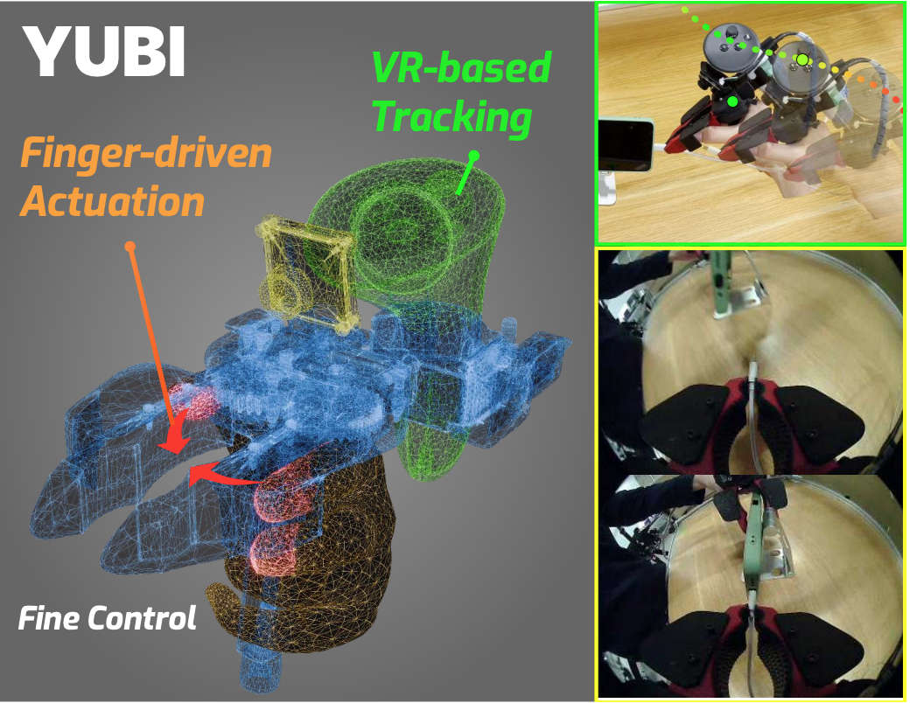
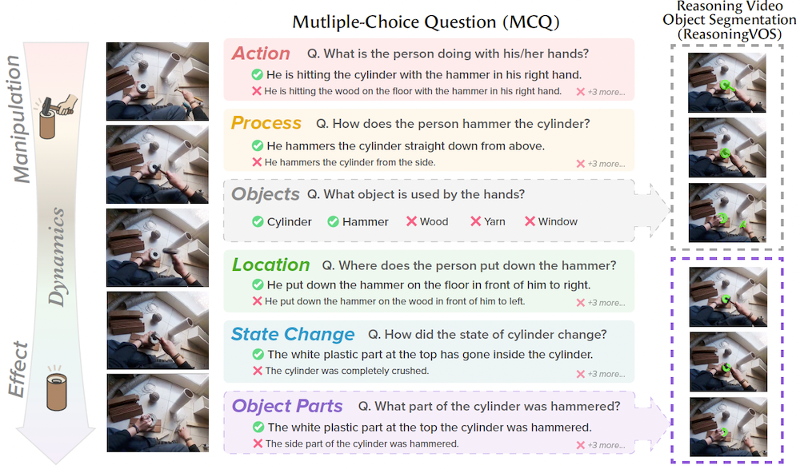
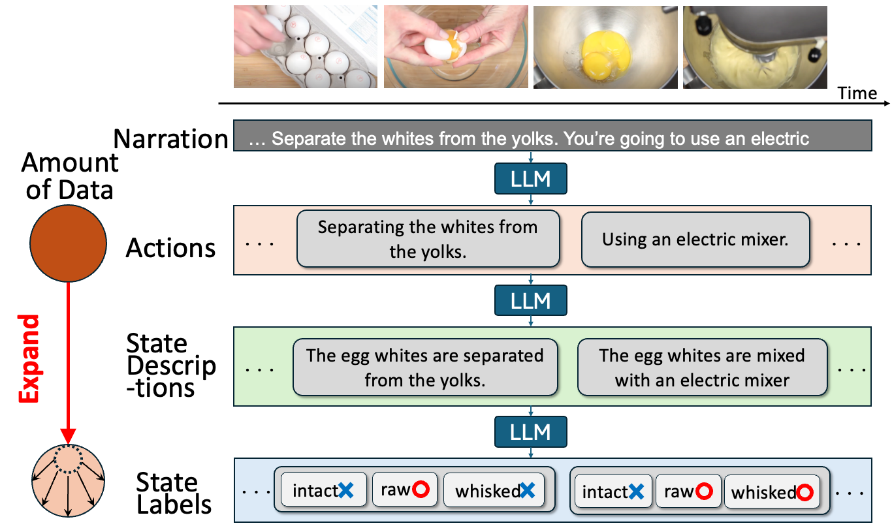
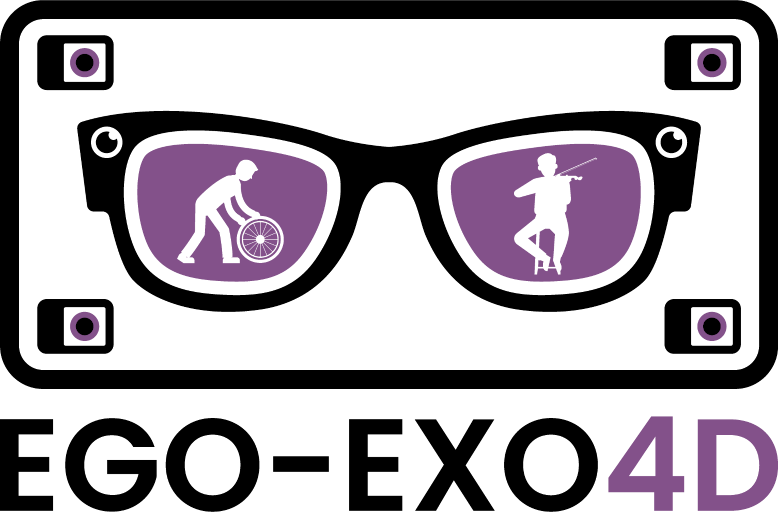

舘野 将寿
Masatoshi Tateno
I am a third-year Ph.D. student at the Graduate School of Information Science and Technology, The University of Tokyo, advised by Prof. Yoichi Sato. I am currently interning at AIRoA.
Before that, I graduated from the same department in 2022 and got Master’s Degree of Information Science and Technology. I also worked as Research Assistant at AIST (2023-2024).
Email: masatate[at]iis.u-tokyo.ac.jp
I am actively looking for research positions starting April 2027, after completing my Ph.D. — feel free to reach out!
-
PhD'22-

-
Intern'26

- Visitor'24-'25
- Intern'23-'24
- Intern'22-'23
News
-
(July 2026)
My new paper Do Egocentric Video-Language Models Capture Both Hand- and Object-Centric Cues? is released on arxiv.
-
(June 2026)
Our new paper YUBI: Yielding Universal Bidigital Interface for Bimanual Dexterous Manipulation at Scale is released on arxiv.
-
(April 2026)
🔥 CVPR 2026 — My paper in CVPR 2026 is selected as a highlight paper ✨
-
(Feb 2026)
🔥 CVPR 2026 — My new paper HanDyVQA: A Video QA Benchmark for Fine-Grained Hand-Object Interaction Dynamics got accepted to CVPR 2026 🎊. See you in Denver!
older news (2025 and earlier)
-
(Dec 2025)
My new paper HanDyVQA: A Video QA Benchmark for Fine-Grained Hand-Object Interaction Dynamics is released on arxiv.
-
(Oct 2024)
🔥 WACV 2025 — My new paper Learning Multiple Object States from Actions via Large Language Models has been accepted by WACV 2025 🎉. See you in Arizona!
-
(Sept 2024)
I started a one-year visit to University of Bristol, collaborating with Prof. Dima Damen.
- (July 2024)
Research Interest
- Hand-object interaction recognition
- Egocentric video understanding
- Vision and language
- Visual perception for robot learning
Research

Do Egocentric Video-Language Models Capture Both Hand- and Object-Centric Cues?
Masatoshi Tateno, Alexandros Stergiou, Risa Shinoda, Yoichi Sato†, Dima Damen† (†equal supervision)
arXiv 2026
Oral Presentation at MIRU 2026
We propose a learning paradigm combining hand-object masked training with an HOI-dynamics-aware decoder, and introduce the DEHOI testbed that disentangles hand- and object-related observations through inpainting to evaluate cue-specific reasoning. Our approach exploits both cues more effectively than existing models, improving on DEHOI, action recognition, object state recognition, and robot manipulation action recognition.

EgoYUBIs: Portable Robot Data Collection with Bimanual Handheld Grippers via Egocentric Perception
Takehiko Ohkawa, Masatoshi Tateno*, Kengo Ikeuchi*, Kei Ota, Yoichi Sato (*equal contribution)
Meta Research Summit for Egocentric Intelligence 2026 - Oral & Poster, Best Poster Award 🏆
EgoYUBIs combines the YUBI gripper with egocentric perception to enable portable, wearable data collection for bimanual dexterous manipulation. Our Aria-based setup integrates marker-cube tracking, wrist-camera SLAM, and interaction perception, making in-the-wild robot data collection possible without any stationary capture rig.

YUBI: Yielding Universal Bidigital Interface for Bimanual Dexterous Manipulation at Scale
Takehiko Ohkawa, Jumpei Arima, Yuki Noguchi, Masatoshi Tateno, ..., Kei Ota
Beyond Teleoperation Workshop @ ICRA 2026
We introduce YUBI, a finger-aligned gripper whose finger-driven actuation enables ergonomic and scalable data collection for bimanual dexterous manipulation, and curate a UMI-based dataset of unprecedented scale: 8,434 hours across 1.20M episodes and 119 tasks. A single policy trained on this data transfers across multiple bimanual robots simply by mounting the gripper, and we release the hardware, software, and dataset as one integrated open stack.

HanDyVQA: A Video QA Benchmark for Fine-Grained Hand-Object Interaction Dynamics
Masatoshi Tateno, Gido Kato, Hirokatsu Kataoka, Yoichi Sato, Takuma Yagi
CVPR 2026 - Highlight ✨
Invited Oral Presentation at MIRU 2026
Oral Presentation at MIRU 2025
We introduce HanDyVQA, a fine-grained video question-answering benchmark covering both the manipulation and effect aspects of hand-object interaction, with 11.1K multiple-choice QA pairs across six question types and 10.3K segmentation masks. Even the best-performing model, Gemini-2.5-Pro, reaches only 73% average accuracy against 97% human performance, revealing remaining challenges in spatial relationship, motion, and part-level geometric understanding.

Learning Multiple Object States from Actions via Large Language Models
Masatoshi Tateno, Takuma Yagi, Ryosuke Furuta, Yoichi Sato
WACV 2025
Oral Presentation at MIRU 2024
We formulate object state recognition as a multi-label task handling the multiple states an object holds simultaneously (e.g., an egg can be both raw and whisked), and leverage large language models to derive these states from narrations that rarely mention them, accumulating past context into the pseudo-labels. On our newly collected Multiple Object States Transition (MOST) dataset, our model trained with LLM-generated pseudo-labels significantly outperforms strong vision-language models.

Ego-Exo4D: Understanding Skilled Human Activity from First- and Third-Person Perspectives
Kristen Grauman, Andrew Westbry, Lorenzo Torresani, Kris Kitani, Jitendra Malik, ..., Masatoshi Tateno, ..., Michael Wray
CVPR 2024
We present Ego-Exo4D, a large-scale multimodal dataset of simultaneously-captured egocentric and exocentric video of skilled human activities, with 1,286 hours from 740 participants accompanied by audio, eye gaze, 3D point clouds, camera poses, IMU, and expert commentary from coaches and teachers. We also provide benchmark tasks and annotations for fine-grained activity understanding, proficiency estimation, cross-view translation, and 3D hand/body pose, all open sourced for the community.